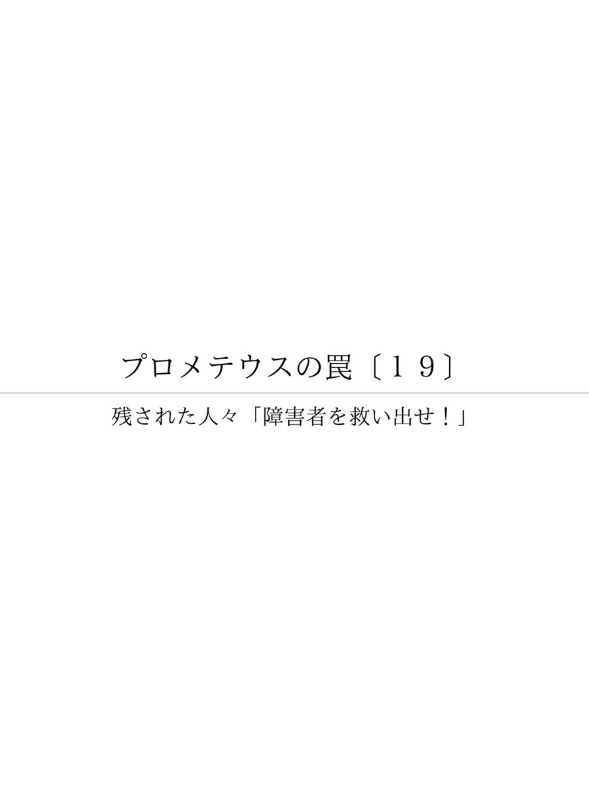

| プロメテウスの罠〔１９〕 残された人々「障害者を救い出せ！」 (朝日新聞デジタルＳＥＬＥＣＴ) | |
| 朝日新聞社 | |
| (2013) | |
福島原発事故で避難しなければいけない被災者の中には、動きのとれない様々な障害者や要介護の高齢者がたくさんいた。人工透析が必要だが病院が閉鎖し、怒り、途方にくれた人もいた。とりわけ障害者は要援護者名簿があれば救えるはずだが、役所では個人情報の壁が立ちはだかった。南相馬市を舞台に、福祉施設の奮闘、ボランティアの献身、禁を破った役所担当者の苦悩と行動などを仔細に追いつつ、過酷事故後の盲点と課題を伝える。

内容紹介
福島原発事故で避難しなければいけない被災者の中には、動きのとれない様々な障害者や要介護の高齢者がたくさんいた。人工透析が必要だが病院が閉鎖し、怒り、途方にくれた人もいた。とりわけ障害者は要援護者名簿があれば救えるはずだが、役所では個人情報の壁が立ちはだかった。南相馬市を舞台に、福祉施設の奮闘、ボランティアの献身、禁を破った役所担当者の苦悩と行動などを仔細に追いつつ、過酷事故後の盲点と課題を伝える。
初出
朝日新聞 二〇一二年十月二十三日～十一月十一日
第１章 避難なんかできない
第２章 名簿見せてくんねが
第３章 千畝になるのは今だ
第４章 耳の情報だけが頼り
第５章 無人島みたいに静か
第６章 どうしたらいいの！
第７章 今度のバスが最後
第８章 ３食ともパン１個
第９章 「放射能がおはよう」
第１０章 手話が見えない
第１１章 一人で支え続ける
第１２章 避難先「いえません」
第１３章 どんな処分が出ても
第１４章 苦情は来なかった
第１５章 霞が関で訴えた
第１６章 「惻隠の心は仁の端」
第１７章 どこでも、命救える
第１８章 もろ手を挙げて賛成
第１９章 押しつけられた責任
第２０章 未来へ火は消せない
福島県南相馬市役所。
大震災直後の２０１１年３月１７日から１８日にかけ、健康福祉部長の西浦武義（にしうらたけよし）（６１）は東庁舎１階の職場で、ひっきりなしに鳴る電話に驚いていた。
電話のほとんどが、市内の障害者からだった。
市役所から２５キロ南の福島第一原発で爆発が相次ぎ、市は３月１６日夜、約７万人の全市民に市外への避難を呼びかけた。しかし、電話してきた障害者は自宅にいた。
「お互い障害者の夫婦だ。慣れない食事だと腹をこわす。ほかの場所に移れないから自宅にいたい」
「息子に精神障害があり、避難なんかできない」
「避難方法や支援物資の情報が全く来ない。支援物資だけでも届けてほしい。市長にそう伝えろ」
西浦は思った。
――障害者が、なしてこんなにたくさん残ってんだべか。
最初の爆発から自主避難は始まっていたし、市民はとっくに避難しているとばかり思っていた。
しかし考えてみれば、車の運転ができず、避難手段のない障害者はいる。避難所に行っても迷惑がられると遠慮したかもしれない。避難すると症状が悪化する人もいるだろう。
そうだ、避難したくてもできなかったのだ――。
１６日には中年の男性がえらい剣幕で訪れ、西浦が応対していた。
「人工透析なのに、病院さ閉まっちまった。どうしてくれる！」
西浦は県に受け入れ先の病院を打診した。しかし見つからない。男性は怒りながら帰っていった。その後どうしたかは分からない。
たくさんの苦情が来たことで、助けを必要とする市民がまだ多く残っていることが分かった。自分は福祉担当者なのに、避難所の運営に気を取られ、弱者の目線に立てていなかった。ショックだった。
食料が底をついたら、死者が出るかもしれない。「このままでは震災で助かった命が助からなくなる」
南相馬市は原発事故後、避難指示区域と屋内退避指示区域、何も指示がない区域の三つに分けられた。市の避難勧告後の１７日、市内の病院は閉ざされた。障害者支援のヘルパーも避難した。西浦はあせった。
障害者がどうやって過ごしているのか、調べなければ。
南相馬市の健康福祉部長、西浦武義が引っ張り出したのは市の「要援護者名簿」だった。
災害時に、避難を支援する必要がある障害者と高齢者の一覧だ。４２８０人の住所氏名、障害の度合いなどが具体的に書かれている。
震災直前にまとめたばかりだ。これから民生委員や行政区長、消防団などに配り、安否確認や支援に役立ててもらう予定だった。
だが、そうした人たちも避難している。避難できない障害者を、どうすれば調べられるのか。
いったん避難しながら、避難所では生活できないと感じる障害者が、自宅に戻るケースも増えている。
だれが避難し、だれが残っているのか。確認できないまま時間だけが過ぎていった。
３月２０日過ぎ、市内の福祉ＮＰＯ代表理事の青田由幸（あおたよしゆき）（５８）が市役所に西浦を訪ねてきた。
青田は西浦と同じ合併前の旧鹿島町出身で、旧知の仲だ。障害者支援を仕事としており、日頃から顔を合わせる機会も多い。
青田は避難せずに残り、ＮＰＯのメンバーや全国の福祉ボランティアらと独自に施設利用者の安否を確認していた。
「部長、障害者がたくさん残ってるべした。大丈夫かい？」
そのころ、陸上自衛隊第１空挺（くうてい）団が、市内の全戸をしらみつぶしに調べていた。「自衛隊が回ってっから大丈夫だべ」と西浦は答えた。
しかし青田は「自衛隊なんか来てねえっていってる障害者が何人もいっど」という。
青田は、市が要援護者名簿を持っていることを知っていた。
「うちでも安否確認してるし、名簿と擦り合わせられれば、市内の障害者の正しい安否確認ができる。名簿見せてくんねが」
西浦は断った。
「そりゃだめだ。名簿は個人情報だ。見せらんねえ」
「見せらんねえって、支援受けらんねえ障害者がそのままになったら、死ぬ人がいっぱい出てくっぺした。そうなったらどうすんの」
にこにこしていたが、青田の口調には強い危機感がにじんでいた。
西浦はしばらく考えていたが、こういった。
「震災以来ずっと役所にしかいねえがら、外の空気吸いてえ。明日の昼ごろ、行ってもいいが？」
青田は、西浦が名簿を見せる決意をした、と直感した。
南相馬市で福祉ＮＰＯを運営する青田由幸が、市健康福祉部長の西浦武義と会った翌日の昼過ぎ。
西浦は大きな風呂敷包みを抱え、市内原町区にあるＮＰＯの施設「デイさぽーと ぴーなっつ」に向かった。障害者の生活介護施設だ。
風呂敷の中身は「要援護者名簿」だ。西浦は風呂敷を開けながら「役所では見せらんねえから、今見ろ」といった。
青田は、自らの安否確認情報と名簿の突き合わせを始めたが、「こりゃあ大変だ」と声をあげた。
自衛隊は市内を回っていたが、青田が回ったうちの６～７人の障害者は「自衛隊なんか来てない」といった。そのだれもが、載っていない。
「部長、他にも載ってねえ人がいるんでねえのが」
名簿は市の身体障害者手帳と療育手帳の情報がもとになっている。そのうち重度の人が対象で、要介護度３以上の高齢者も含まれている。
だが全員を網羅しているわけではない。掲載に同意した人しか載らず、掲載された４２８０人は対象者全体の約６７％に過ぎなかった。
青田は４日後、市役所に西浦を訪ねた。
「障害者の安否確認を丁寧にやるには、身体障害者手帳と療育手帳の個人情報開示しかねえべ」
「ぴーなっつ」には震災後、全国の福祉施設で働く職員らがボランティアで支援に入っていた。手帳の情報さえ開示されたら、こうした人たちの協力で徹底的な安否確認ができる。青田はそう提案した。
しかし、手帳の情報はプライバシー度が高いうえ、要援護者名簿への掲載に同意しない人も含まれる。部長とはいえ、西浦が自分の一存で公開を決めることは許されない。
西浦は「それは無理だ」と一度は断った。そのとき頭の中に、ふっと１人の人物が浮かんだ。
杉原千畝（すぎはらちうね）。
第２次大戦中のリトアニアで、ナチスから逃れようとするユダヤ人難民に、日本外務省の意向を無視して通過ビザを発給し続け、多くの命を救った外交官だ。
西浦は役場に就職したときから、公務員としてああいう仕事ができないものかと思ってきた。
それが今なのではないか。
西浦は部下にＵＳＢメモリーを持ってこさせ、「市内の手帳保持者に関する情報を全部入れて」と指示した。懲戒免職を覚悟しての決断だった。
南相馬市の「要援護者名簿」に名前が出ているかどうかはともかく、避難したくてもできずにそのまま孤立した市内の障害者はたくさんいた。
視覚障害がある古小高忠（こおたかただし）（６４）、美紀子（みきこ）（６２）夫婦もそうだった。
原町区の自宅の一室を仕事場に４０年以上、あんま・マッサージ・指圧業などを営む。忠は、子どものころの網膜剥離（はくり）が原因で全盲だ。美紀子は先天性の弱視。２人にとって、耳からの情報だけが頼りだった。
原発事故の状況はテレビで刻々と耳にしてはいた。しかし......。
忠が振り返る。
「いつの段階でどう対処するか、その判断が自分らにはつかなかった。放射能の知識がなかったこともあるけども」
健康福祉部長の西浦武義が、避難せずに残っている障害者の存在を知ったのは３月１６日だった。市はその夜、避難のための説明会を開くことを決めた。
市の広報車が日中、何度も回った。しかし広報車はかなりのスピードで走っていく。重要なことをいっているらしいことは分かったが、その言葉を忠は聞き取れなかった。広報車はガソリン不足でゆっくり走ることができなかったのだ。
無線機がなかったので市に電話した。通話中ばかりだ。何度目かでやっと通じ、時間と場所がわかった。
夜、説明会に出た。
担当者は、援助物資が届かないこと、市民の生活に責任を持てないことなどをあげ、すぐ避難してほしいといった。不安をあおることをいいながら、なぜ避難するかの説明は不十分だった。
忠は避難しないことにした。
「避難しろったって準備なんかもあるし、そんな急な話もちょっとなかんべ。強制的に避難させられるまで様子見っぺ」
美紀子も同意した。
他人に迷惑をかけるだろうと思ったのも、避難しなかった大きな理由だ。風呂やトイレの作りなどが自宅と違う。手探りの避難所暮らしで、人の足や頭を踏んだりしたら困る。
「健常者が想像する以上に、避難は視覚障害者にとって不安だし、決断には勇気が必要なんです」
たまたま震災の直前に食料品が宅配されていて、すぐ生活に困るということはなかった。
ただ、いざという時のためスーツケースに着替えや貯金通帳などを詰めた。
南相馬市に住む視覚障害者の古小高忠、美紀子夫婦は、避難しないことに決めた。近所では、住民がいつの間にか姿を消した。
「隣の家、電気ついてない」
「あそこの家、車がない」
視力がわずかに残る美紀子が、忠にそう報告した。３月１７日以降は車の音が途絶え、カラスの鳴き声しか聞こえなくなった。
「ほんと静かだったもの。無人島に自分たちだけが住んでるみたいだった」と美紀子。
忠は振り返る。
「車の運転ができないから、避難したくてもしようがない。思うように動けないおれたちだけが残った、やっぱり弱者なんだな、と」
電気と水道は来ていた。プロパンガスと灯油は補充したばかりだ。食料も、当面の分はあった。
しかし、新たな食料が入手できない。物資が配られているのをテレビで知ったが、時間と場所がわからない。
孤独な居残り生活が２週間を過ぎた３月末ごろ、いきなり自衛隊員がやってきた。うれしかった。彼らからは「避難する手段はありますか」と聞かれた。市や社会福祉協議会から連絡はなかった。
外部との連絡は電話だけが頼りだった。しかし忠は「市役所はいつもつながらなかった」という。
健康福祉部長だった西浦武義に電話の不通を尋ねると、「本当に申し訳ない」と頭を下げた。
市役所には、避難についての苦情が殺到していた。いつまでも電話を切らせてくれない苦情もある。ただでさえてんやわんやの忙しさだ。仕事に支障が出るため、受話器を外しっぱなしにする職員もいた。西浦はそれを黙認していた。
震災前から、忠と美紀子は民生委員に連絡したこともなかった。
「手に負えなくなったら助けを頼もう。それまでは頑張ろう」
北隣の相馬市にいる親戚が、食料を運んできてくれたときはうれしかった。しかし、プロパンガスもいずれなくなる。
「おまがねするにしても、よく考えてやんねえと」
「おまがね」は炊事のことだ。入浴は１日おきとした。
３月２０日過ぎ、仙台市で働く長男（２９）が自転車で約７５キロを駆けつけた。片道５時間、ホウレンソウなど積めるだけの生鮮食料を積んで。
「あのときは正直いって、親である私でもぐっときた」
精神・知的障害や発達障害がある人は、生活環境が変わると安定を失いやすい。不安から、壁に頭を打ちつけたり奇声を上げたりして、周囲が驚くこともある。
こうしたことは、南相馬市民の避難所でも実際に起きていた。市健康福祉部長の西浦武義のところにも、避難所から「何でこんな人を連れてきたのか」という声が寄せられるようになった。西浦は思った。
「周囲に遠慮して避難できず、家に居続けるしかない障害者もいるのではないだろうか」
原町区の看護師、大和田（おおわだ）みゆき（４３）の一家４人がそうだった。
母１人、娘３人の４人世帯。高校生の長女（１６）は健常者だが、次女（１２）は発達障害で療育手帳、三女（６）には精神障害者保健福祉手帳が支給されている。大和田も、首の神経を痛めて手足の指先の機能不全があり、身体障害者手帳を持つ。
震災直後、避難しようと思った。しかし、避難所で次女と三女がどんな行動を取るかわからない。子どもたち自身も家を出るのをいやがったので、避難をあきらめた。大和田自身も手足の痛みが増し、４人で自宅にこもることにした。
残る選択をしたのは、自宅がある原発から２０～３０キロ圏を政府が「屋内退避指示」にしたこともある。テレビで、官房長官の枝野幸男が「放射性物質は出たが、直ちに人体に影響はない」ともいっていた。「それなら無理に避難しなくても大丈夫かな」と考えた。
だが、周りの知人が次々に避難していく。あせりを感じた。車にはガソリンがほとんど残っていない。スタンドは長蛇の列で、並んでも確実に入手できる保証はない。どうしようもなかった。
次女と三女は状況がわからず、大和田が仕事に行かずに家にいることを喜んだ。「お外で遊んでいい？」「自転車に乗りたい」とせがむ。
外は放射能だ。「だめだよ、お外が汚れているからね」と答えた。娘たちは一日中しつこく、「なんでだめなの」と繰り返した。
部屋で、好きなアイドルグループ「嵐」のＤＶＤを見て過ごした。
３月１５日朝、原発が３度目の爆発を起こした。避難しないことに不満げだった長女が、「なんでうちだけ避難しないの！」と大和田に強く抗議した。
「ガソリンがないんだよ！ お母さんだってどうしたらいいかわからないんだよ！」
２０１２年８月、南相馬市の看護師、大和田みゆき（４３）の次女（１２）と三女（６）が琵琶湖に行った。
大阪市の支援団体が、障害児を含めた南相馬の子どもたちを受け入れている。今回が４回目だ。
８月２４日、大和田と長女（１６）が東京まで出て行き、戻って来た次女と三女を新幹線ホームで迎えた。
「楽しかった。もっといたかった」。すっかり日焼けして、２人はうれしそうだった。
放射能を気にしなくてもいいところで思い切り遊ばせたい。琵琶湖に行かせることを決断したのは、震災後の「自宅にとどまる」決断が、今も胸に重くのしかかるからだ。あれは間違っていたのではないか。
１１年３月１６日、大和田の地区で、市の説明会があった。家にこもるか、避難するか。まもなく新潟方面に行くバスが出る――。
放射能の影響について心配していたが、市側の言及はなかった。夜９時ごろに帰宅し、３人の娘と家族会議をした。
「今度出るバスが最後だっていうけど、どうする？ でも、知らない人たちと一緒だよ」
次女と三女はいやがって暴れ出した。長女も反対だった。
「わかった。じゃ家にいようね」
避難バスが出ていった３月１７日から、町ではめっきり人が減った。食料などの配給場所と時間は、広報車の言葉を懸命に聞き取った。同じような発達障害児を抱える家族に教えてもらうこともあった。
娘たちに二重三重のマスクをさせ、いっしょに配給に数時間並ぶこともあった。冷たいおにぎりも、賞味期限切れのパンも、ありがたく食べた。障害のある三女の子ども用おむつがなくなり、老人用をもらってきたこともある。
大和田自身の体調も思わしくなかった。ストレスから体が痛み、しびれでよく眠れなかった。精神安定剤と睡眠薬、痛み止めのモルヒネ、筋弛緩（しかん）薬など１３種類を毎日３回ずつ飲んだ。
薬局は閉じている。通院先は福島市なので行けない。１回分の薬の量を減らさなければならない。包丁で錠剤を半分に割って飲んだ。自分はどこまで持つのかな、と思った。
３月下旬、長女が突然いった。
「あたし、がんになっちゃうの？ 白血病になっちゃうの？」
お母さんは看護師なんだよ、と胸を張って見せた。でも、夜に布団へ入ると、涙を流した。

南相馬市で孤立した大和田みゆきの一家は、病気やストレスに悩まされながら、震災後の２カ月を何とかがんばった。
だが５月、食べ物がなくなった。
それまでは配給のパンやおにぎり、親戚や友人からの食料で補って暮らしていたが、ついに買い置きのコメがなくなった。３食ともパン１個の日が続くようになった。
野菜と肉は３月下旬、避難しなかった市内の肉屋で肉と野菜入りのパック品を買ったが、８千円もした。以後はとても手が出なかった。
健常者の長女は、障害のある次女と三女に自分の食べる分を分けてやったため、体重が３キロも落ちた。
５月中旬、もう限界だった。
大和田は次女と三女を連れて、青田由幸が代表理事を務める福祉ＮＰＯの施設「デイさぽーと ぴーなっつ」を訪ねた。
「食料が足りないんです。こちらへ伺えば食べ物がいただけると、知り合いから聞いて来ました」
施設長の郡信子（こおりのぶこ）（５１）が応対した。次女と三女はおもちゃで遊んでいる。
大和田は郡に、娘の療育手帳と精神障害者保健福祉手帳、自分の身体障害者手帳を見せた。家族構成や家庭環境を知ってほしかったのだ。
郡は「それほど重い障害でなくても避難できず、生活に困っている人がいるんだ」と驚いた。
飲料水やコメ、野菜、インスタントカレーなどを大和田に渡した。頼まれたより、かなり多めに。
大和田はカレーがとてもうれしかった。自宅にこもった当初から、子どもたちは「カレーを食べたい」といっていたからだ。帰ってからすぐにみんなで食べた。
大和田は郡に、自分たちの状態を語った。１人で３人の子どもを育てていること。放射能の影響におびえながら自宅にとどまることを決めた理由......。
郡は親身に話を聞いてくれた。大和田は涙が出てとまらなかった。
「自分の話を聞いてくれる人がいる。あんなうれしい気持ちになったのは久しぶりでした」
そのころ、健康福祉部長の西浦武義が提供した個人情報をもとに、青田のＮＰＯと全国の福祉ボランティアが協力して障害者の安否確認調査を進めていた。ただそれは障害程度が重い人が対象だった。
郡は青田に相談し、障害等級の軽重にかかわらず、障害者全員を調べることに方針転換した。
南相馬市の自宅で屋内退避していた大和田みゆき一家は２０１１年１１月、北隣の相馬市に用意された仮設住宅に引っ越した。
「子どもたちを、放射能の影響から少しでも遠ざけたかったんです」
問題は、発達障害の次女と三女だった。引っ越しという生活の変化をすぐに理解できない。何度も下見に連れて行き、説得を繰り返した。たまたま次女の友だちが同じ仮設に入っており、それでやっと納得した。
青田由幸のＮＰＯの施設「デイさぽーと ぴーなっつ」のおかげで食料問題は解消し、引っ越しで屋内退避問題も終わった。しかし大和田は、別の問題で悩むようになった。
「原発事故直後から半年以上も居残ったことで、娘に将来、放射能の悪影響が出るのではないか。選択が間違っていたのではないか、と」
大和田は娘たちにたびたび「申し訳ないね」と謝るようになった。
長女は１１年４月、高校に入学した。第１志望、念願の学校だった。にもかかわらず「学校に行きたくない」といい出すこともあった。
三女は１１年１１月下旬、県の甲状腺検査を受けた。結果は「Ａ２」。４段階の下から２番目で、「小さな嚢胞（のうほう）があるが、経過観察でいい」という内容だった。だが、「ゼロ」ではない。不安は消えない。
三女は屋内退避のころから、妙なことをいう。
「放射能が毎日あいさつしてくるんだよ。朝はおはよう、昼はこんにちは、夜はこんばんはって」
放射能の意味は分かっていないと思うが、どきっとした。
ある日、長女が大和田にいった。
「おかあさん、そんなに自分を責めなくていいよ。あたしもう割り切ってるから」
聞き返すと長女は答えた。
「県外で結婚するってなるときっと反対されるよね。福島出身というだけでアウトでしょ。だから結婚は考えてないよ」
大和田はショックを受けた。
この５月、避難する母親同士でサークルをつくった。避難生活のいろいろなことを話し合う。それだけで悩みが薄まる。カウンセリングの資格を取るため福祉の勉強も始めた。
「こうして、少しでも強く生きていくしかないんです」
原発が廃炉にされて環境がきれいになったわけではないし、子どもの障害や生活の苦しさは今も続いている。大和田にとって、震災は終わっていないのだ。
南相馬市では、聴覚障害者も混乱した。
広報車の音声が聞こえない。防災無線にも気がつかない。何よりも、停電の暗闇で手話が見えなかった。
原町区の八巻江津子（やまきえつこ）（５５）は、「放射能、という意味がしばらく分かりませんでした」という。「放射能」という手話の表現を知る機会がなかったのだ。
原発が爆発した直後、長男が「早く窓を閉めて！ 窓の隙間を埋めて！ 換気扇を止めて！」と慌てているのを見て初めて、これはただごとではないと思った。
震災１週間後の３月１７日から一時期、夫や長男らと東京の長女のところに避難した。だが八巻には、避難しなければならない理由が理解できない。いわれたから仕方がなく、という感じだった。
かつて弟が福島第一で働いていた。しかし話を聞いたことはない。「放射能」を理解したのは、やっと秋になってからだった。
「何も聞こえないから何も分からない。基本的には、家でじっとしているだけでした」
八巻の仲間で同じ聴覚障害者の松田邦子（まつだくにこ）（６９）は、停電で隣家にいる兄の家族と過ごした。暗闇で手話が通じず困った。八巻が松田に携帯メールで「大丈夫？」と送った。しかし一時避難があったり、電池切れだったりで読めなかった。
八巻と松田は、健常者も参加する市内の手話サークル「耳通口（みみずく）」のメンバー。原発爆発後、何が起きたのか、サークルのメンバーに尋ねようとした。しかし多くが避難してしまって連絡がとれなかった。
八巻たちにとって、手話以外の数少ない伝達手段が携帯メールだ。「耳通口」メンバーの平野道代（ひらのみちよ）（５９）は自宅に残った。震災前日の３月１０日に、市の緊急情報等サービスに登録したばかりだった。災害情報が自動的に送られてくる。
それを分かりやすく書き直し、必死で２人に送り続けた。
「余震が続いているのでお気をつけ下さい。夜ねる時は物が倒れてくるおそれのないように」
「各地に避難勧告がでてますが、原町区はまだ入ってません」――
爆発が相次いだあとは、ひっきりなしにメールを打っていたように思う。八巻はのちに「このメールが頼りだった」と平野に感謝した。
八巻はいう。「聴覚障害は、見た目は健常者と変わらない。大変さを理解されないのです」
南相馬市では、多くの障害者や要介護のお年寄りが、避難できずに居残った。そのとき支援する側が避難してしまっていたら、どうなるのだろう。
市社会福祉協議会の高野和子（たかのかずこ）（５８）は、協議会所属の約４０人のヘルパーのうちたった１人、屋内退避地域で避難せず残った。自宅に住み続け、残された要介護者を支えた。
「ヘルパー仲間の方も、自分たちが逃げていいのかなという気はあったようです。でも家族のこともあるし、残れという指示もなかった。広報車が避難しろといって回っていたので、避難して当然でしょう」
高野の夫は電気部品製造会社で働き、震災１年前から中国に単身赴任中。同居の娘は市内の病院の臨床検査技師で、震災後は病院に泊まり込んでいた。避難するか残るかは、自分１人で判断すればよかった。
１１日の震災当日は、相次ぐ余震の中で要介護者の世話を続けた。
１２日の原発爆発後、自主避難するヘルパーもいて、活動が事実上中断したため、介護依頼の電話があっても断るしかなくなった。
「日頃から世話をしている人々です。実情がわかるだけに、断るのは本当に苦痛でした」
屋内退避指示が出た１５日からは、娘の病院で手伝いを始めた。
１８日、全市の避難勧告に合わせ、協議会はいったん閉じられた。
協議会の常務理事・佐藤信一（さとうしんいち）（６４）は利用者のことが心配だった。
「でも市民は続々と避難していたし、協議会の職員にも家族がいますからね。やむを得なかった。在宅障害者の人たちも避難したと思っていた。多くが残っていたことは避難してから分かりました」
市健康福祉部長の西浦武義は「頼りの協議会が閉鎖するなんて」と驚いた。会津地方に避難していた佐藤と連絡が取れた。佐藤も気になっていた。すぐ南相馬に戻った。
２０日午後、無人の協議会で西浦と佐藤が話し合っていると、高野が偶然、忘れ物を取りに顔を出した。
「ヘルパーさんだって？ いいところに来てくれた！」
西浦は思わず声を上げた。介護依頼の電話が、市にも入っていたからだった。高野は以後、朝の７時過ぎから要介護者の家を回り、夜は９時ごろに帰宅する生活となる。
１人ではとても手が回らない。１週間後、まずは避難していた同僚のヘルパー１人を呼び戻す。それまでは無我夢中だった。
南相馬市でヘルパー活動を再開した社会福祉協議会の高野和子は、獅子奮迅の働きだった。
３月２０日に活動を再開したとき、協議会には要介護者からの支援要請が山のように届いていた。原町区だけで在宅介護者は約７００人いる。そのほとんどが残っていた。
まずは掃除。
食事づくりは当然だ。
床ずれ処置をする。酸素吸入の人を風呂に入れる。本来は看護師がやる作業だ。床ずれ処置は専用シートなどないため、ラップで代用した。
多少動ける人もいた。しかし家族が避難していて食料がない。そういう家には食料を届けた。
「避難所では生活できない」「避難したくてもガソリンがない」と、愚痴をこぼされた。自らの食事もろくに取れなかった。
「でも、気が張っていたので苦になりませんでした」
支援と同時に安否確認もした。玄関を開けて応答がなければ、室内で倒れている可能性もある。上がって室内やトイレをくまなく調べることもあった。
そんな活動で最大の障害になったのが、個人情報の問題だった。
どこにだれがいるのか。どこに避難したのか。市は「いえません」。近所の人々に聞いて回ってやっと分かることもあった。以前から担当してきた人がどこに行ったのかわからないまま、くじけそうになることもあった。
「混乱の中では個人情報保護なんていっていられないはずなのに。命にかかわることだってあると思う。なんとかしなければいけないことなのに、忙しいのでうやむやにされている」
市内を走り回るのに、放射能への恐怖はあった。
「初めは防護服を着てました。でも動きにくいし、『いまさら何したってだめだべ』って脱いじゃいました。マスクも一緒に」
高野は２０１１年８月、協議会のヘルパーから生活支援相談員になった。仮設住宅を回り、要介護者を中心に避難者の心身状態を調べている。
仮設住宅からあいさつにも出てこなかった人が、一生懸命に話をしようとする。一方で「子どもが戻って来ねえ」「いつまで仮設で暮らすのか」と悩みを漏らす人もいる。
高野はできるだけ頻繁に足を運び、話を聞こうと思っている。１１年３月のつらさを思えば、何ということはない。
南相馬市の健康福祉部長・西浦武義が、障害者の個人情報を外部に見せたことは、２０１１年５月に入ると庁内で問題になりはじめた。
個人情報保護法によると、人の生命や財産の保護のために必要で、本人同意を得るのが難しい場合に、自治体は第三者に個人情報を提供できることになっている。市の条例でも、そう書かれている。
だが西浦は、障害者の個人情報を第三者に開示することが妥当かどうか、市として正式に判断する前に、福祉施設「ぴーなっつ」の青田由幸に見せていた。
市幹部の会議の場で「本当に大丈夫か」といわれた。つらかったのは、別のときに部下から「部長のやっていることは条例違反です。意義はあると思いますが、すぐに中止すべきです」と、面と向かっていわれたことだった。
そのたびに、西浦は「すべて私が責任取っから」と答えた。
そういえたのは、個人情報を出す前に、青田が特例事項を探し出してくれたからだ。内閣府の検討会が０５年にまとめた「災害時要援護者の避難支援ガイドライン」だ。
ガイドラインは、避難に手助けが必要な人の住所などを関係機関と共有し、一人ひとりの避難計画をつくることを、市町村に求めている。
さらに、市町村の持つ個人情報の第三者への開示は、守秘義務を確保したうえで積極的な開示を促す。福祉サービスが継続できるよう、協力団体を支援することも訴えている。
青田は、これで少しでも西浦を支えられる、と考えた。西浦はいう。
「情報を開示したのは市民の命をとにかく救いたかったから。どんな処分が出ても受けるつもりだったから、これで救われた、と思ったね」
一方で、身体障害者手帳と療育手帳について、情報開示を認めてもらうよう、庁内で申立書を出した。しかし手続きはなかなか進まない。
市に迷惑をかけるのはまずいと考え、５月の連休が明けると青田に頼み、残された障害者の調査を中断してもらった。
青田は、市長の桜井勝延（さくらいかつのぶ）（５６）に直訴することにした。
「悲鳴を上げている人がたくさんいる中で、今調査をやめたら大変なことになる。トップダウンでやってもらいたい」
桜井は理解を示す。最終的には５月２６日、申立書が決裁され、正式に手帳情報が開示された。調査も再開した。
南相馬市の「残された障害者」をめぐる個人情報開示の問題は、市長の桜井勝延の決断で、ひとまず決着した。
桜井はいう。
「市民の安否確認が出来る態勢をつくるのは、行政として必要。自力で避難できない人たちをいかに支援するかが重要で、協力が得られる団体には率先して情報を出したほうがいい。どう思われようと、やってしかるべきだったと思う」
懲戒免職を覚悟して情報を開示した市の健康福祉部長、西浦武義には強い支えとなった。
中断していた「ぴーなっつ」職員とボランティアによる調査が再開した。市の依頼で調査をしていると書かれたチラシが各戸に配られた。
西浦は、個人情報を勝手に使っていると抗議が来るだろうと覚悟していた。だが、調査が終わるまで苦情は来なかった。逆に、「行政に見捨てられていなかったんだ」という喜びの反応の方が多かった。
桜井の決断のきっかけは「災害時要援護者の避難支援ガイドライン」だった。それをつくったのは内閣府。障害者制度改革担当室長を務める東俊裕（ひがしとしひろ）（５９）はいう。
「障害者の支援には、手帳などの個人情報開示が必要だと考えてはいたが、被災地ではうまく進まなかった。南相馬に屋内退避指示が出ると、障害者が放置されているのではないかと思い、たまらなかった」
東は自ら車いすを使う障害者だ。原発事故から間もない２０１１年３月下旬、南相馬に入って福祉ＮＰＯ代表理事の青田由幸にも会っている。
各種障害者団体で組織する日本障害フォーラム（ＪＤＦ）幹事会議長の藤井克徳（ふじいかつのり）（６３）も、個人情報が開示される動きになったことで南相馬に注目した。自身が視覚障害者だ。
「他の市町村ではほとんど情報開示が進まなかった。こんな極限状態で、個人情報を悪用することなど考えられないのに」
ＪＤＦは震災直後から、青田のＮＰＯ「さぽーとセンターぴあ」への支援を全国に呼びかけ、ボランティアを集めた。彼らが「残された障害者捜し」に走り回ったのだ。
彼らは支援方法について毎晩遅くまで議論し、西浦が開示した情報を元に南相馬市をくまなく調査した。
西浦はいう。
「行政ができないことを、彼らが真剣に取り組んでいる。自分だって自分にできることをしないと、と思ったね」
南相馬市の個人情報開示を受けて、２０１１年５月から、残された障害者の調査が再開した。市と福祉施設「ぴーなっつ」、日本障害フォーラムが共同で安否確認を行った。
原発から２０キロ圏内を除き、安否不明の障害者は１１３９人だった。
１２年１月の段階で、それが２３人に減った。調べが進むと、そのほとんどが震災前に亡くなっていた。これで対象者の安否がほぼつかめた。
在宅が確認できると、市職員が食料などを届けに行った。さまざまな行政サービスが再開した。
１月２３日、市健康福祉部長の西浦武義は、東京・霞が関にいた。内閣府で開かれた「障がい者制度改革推進会議」に出席するためだった。
そもそもは「ぴーなっつ」の青田由幸に出席要請がきたものだ。しかし青田は「ぜひ行政担当者を」と西浦を推薦した。
西浦は３月に定年退職を控えていた。迷ったが「もう何をいっても大丈夫だろう」と考え、決断した。
会議で西浦は、身体障害者手帳と療育手帳に関する個人情報を、第三者に開示したことを話した。
要援護者名簿についても触れた。
「民生委員、行政区長、消防団等に配布しておりました。しかし地域全域が避難となったため、機能しなかったものであります」
「名簿は重度の方を対象にしておりましたが、家族構成によって、軽度の方でも、車や支援する家族がいないことで避難出来ない方が数多くおりました」
自分の目が行き届かなかった部分も隠さずに話した。
個人情報開示のきっかけとなった内閣府のガイドラインについても述べた。
「県もあまりよく理解していなかったが、恥ずかしいことに、私も知りませんでした」
「開示について異論はありました。しかし、こういうときにやらないでいつやるのか」
ほかの自治体でも情報開示を進めてもらいたい。個人情報保護を緩やかにしないと人が救えない。これをとにかく訴えたかった。
会議は、各種福祉団体や学識経験者、首長らが出席した。会議は自然と、西浦への質疑が中心になった。
西浦は、自らまとめた資料をもとに淡々と答えた。２７９６人分の身体・知的障害者の個人情報を開示したこと。それにより、確認できていなかった５９０人の安否が分かったこと――。
南相馬市の健康福祉部長だった西浦武義は、２０１２年３月に市役所を定年で退いた。
代々の農家だ。市の海岸寄り、鹿島区の北屋形地区。海から４キロの高台にある。通り抜ける風は潮の香りがする。字名にも「西浦」がつく。
高台の下に、見渡す限り緑に覆われた広野がある。そばに行くと、それは荒れはてた田んぼだと分かる。震災ではここに津波が押し寄せ、がれきが埋め尽くした。
以前は松林があり、海まで見渡すことはできなかったが、いまはまったく障害物がない。
タオルで汗を拭きながら、作業着の西浦がいう。
「田んぼは耕運したんだけんども、除塩が追いつかねえ」
がれきもまだ少し残っている。
田んぼは明治になって開いた干拓地だ。開拓後、地域住民は小作として働いた。「のどかでいいとこだけんど、貧しかったんだね」
田は１町５反。コメは農協を通じ、主に沖縄県に出荷していた。
退職後は、農業のかたわら、鹿島区の生涯学習センターで再任用の市職員として働く。区の文化協会理事長として、囲碁や将棋、踊りなどの文化活動の運営の相談に乗る。
農家の長男だから、家業を継ぐつもりだった。ところが地元の農業高校に進んだ１９６０年代後半、国の農業政策は増産から減反へと大きく方向転換した。
農業ではもう食えないと考え、当時の相馬郡鹿島町役場に就職した。
「なぜ好きな農業ができないのか。なにが減反だ。腹が立ったね。そんだから反骨になったかな」
役場職員として福祉の仕事に長く関わった。現場で障害者と接することも多かった。仕事にすっかりのめり込んだ。その仕事ぶりが評価され、１０年４月に健康福祉部長に任命された。
しかし退職した今、自分の田んぼは塩水を吸い込み、雑草だらけだ。１３年に向け、南相馬の一部では試験的に稲作が行われているが、「やるせない。不安だらけだ」。
コメをつくっても、風評被害で売れないかもしれない。同居の長男は会社勤めで、手伝ってくれる時間がない。
「それでも、やらないと自分がだめになる」
孟子の「惻隠（そくいん）の心は仁の端なり」という言葉が好きだ。他人を思いやっていれば、それが大きな徳に通じるとの意味だという。
南相馬市が断行した個人情報開示は、ボランティアらを通じ、他の自治体にも広がり始めた。
２０１２年１月２９日、沖縄県宮古島市の下地克子（しもじかつこ）（５４）はボランティア活動を志願し、飛行機と新幹線、バスを乗り継いで２日がかりで南相馬市に入った。青田由幸のＮＰＯの施設「ぴーなっつ」の活動に加わる。
現地に着いたとき、鉛色の空からごみが降っていた。それはごみではなかった。初めて見る雪だった。
下地は宮古島で精神障害者らの就労移行支援施設「くこりもや」を営む。日本障害フォーラムからの支援要請で、１１年６月の宮城県石巻市に続き、２度目の被災地入りだった。
福島入りに、家族は放射能の影響を心配したが、「５０歳を過ぎたら大丈夫」といって出てきた。
１週間の滞在中、「ぴーなっつ」で精神障害者の生活支援をした。
青田は、下地らボランティアに、南相馬市の個人情報開示の経験を話した。
「南相馬は特殊事例じゃない。どこでも、災害時に個人情報を開示すれば、多くの命が救える」
青田は下地に、宮古島市の災害時要援護者対策がどうなっているか調べてみるよう頼んだ。
下地は１１年の石巻市で、被災した障害者を探し回った際、どこにだれがいるか分からないという苦労を経験した。聞き込んだ情報を市の担当者に尋ねても、「いえません」の一点張りだったのだ。
宮古島ではどうなのか。
ボランティア活動を終えて宮古島に戻ると、すぐ市長の下地敏彦（しもじとしひこ）（６６）に会いに行った。
市長の下地は話を聞き、手を打つ必要を感じた。すぐに職員を呼び、条例がどうなっているのかを調べさせた。
宮古島市の個人情報保護条例では、生命や財産などの危険を避けるため、緊急でやむを得なければという開示の例外規定を設けているが、具体的ではなかった。
近所づきあいの濃い宮古島では、普段から人の動きはある程度分かる。だが実際に災害が起きたとき、それが通用するとは限らない。
市長の下地はいう。
「個人の権利を侵害しなければ、個人情報保護はある程度緩やかでいいと思います」
市民からの抗議があるかもしれないが、南相馬の事例に共感した。
障害者の個人情報を開示できるよう、改善を指示した。
岩手県の陸前高田市では、被災障害者の安否確認調査が進んでいた。
調査は２０１２年４月に始まった。
対象は身体障害、精神障害、知的障害の計１３５７人。それを約９０人のボランティアが、２人１組で確認して回っている。
障害程度や避難状況、健康状態を調べ、市への要望を聞く。同時に、災害時に個人情報を開示していいかも確認する。
障害者サイドから、この調査についての苦情は出ていない。調査は早ければ１１月中に完了する。
しかし、初めから順調に進んだわけではない。
津波で市庁舎は全壊し、行政資料は流失していた。震災直後から、県と市、地元の支援団体が、県の障害者手帳のデータをもとに安否確認調査をしたが、なかなかつかめない。障害者の犠牲者数さえはっきりしていなかった。
日本障害フォーラム（ＪＤＦ）いわて支援センター事務局長の小山貴（おやまたかし）（４２）は気が気でなかった。ＪＤＦは障害者支援の民間組織の連合体で、小山は奥州市で知的・精神障害者の施設を運営している。
「このままでは支援活動も進まない、と思いました」
福島県の南相馬市が個人情報開示に踏み切った話は知っていた。情報開示してほしいという要望書を、陸前高田市長の戸羽太（とばふとし）（４７）あてに送った。南相馬での活動の様子をまとめたＪＤＦの報告書も同封した。
その結果、陸前高田市の社会福祉課職員と１２年１月６日に会うことができた。小山は南相馬の事例を詳細に説明した。
戸羽は、情報開示を求める小山の話を職員から聞くと、もろ手を挙げて賛成した。
「ゼロからのまちづくりに障害者も参加してもらうつもりだ。そのときの参考になる、と思いました」
２月２０日、市は「今後も市の障害福祉施策を支えていく」という条件で、ＪＤＦに障害者手帳と療育手帳の情報を開示すると説明した。個人情報の扱いについては、市とＪＤＦで覚書を交わした。
戸羽は、国や県の情報開示の姿勢に注文がある。現場の自治体は震災の処理で大忙しだ。そんな最中に情報開示の責任まで背負い込むのは、大変な重荷になる。
「それぞれの自治体に情報開示のげたを預けるのではなく、国がまずきちんと判断を示すべきではないかと思います」
２０１２年７月３日、東京・霞が関の弁護士会館で、災害時の個人情報の取り扱いをテーマに、シンポジウムが開かれた。
日本弁護士連合会の主催で、関東１都３県の自治体の福祉担当職員ら約２００人が参加した。南相馬市の福祉ＮＰＯ代表理事・青田由幸は、パネリストとして壇上に座った。
青田は、南相馬市では「取り残された障害者」を救うために、障害者の個人情報が開示されたことを報告した。当時の市健康福祉部長・西浦武義が努力したことも話した。
「しかし、西浦部長は定年退職した。今後災害が起きても、個人情報が開示されるかどうかわからない。自分の自治体で同じことが起きたら何ができるのか。皆さんは今のうちからよく考えてください」
参加者の７割がアンケートを記入した。
「青田さんの思いを無駄にしないよう、われわれも取り組んでいきたい」といった感想が多かった。
一方で、個人情報開示に否定的な意見や、消極的な反応も目立った。
「結論ありきの内容だ。災害に乗じた詐欺など犯罪が起きる可能性があり、開示には不安がある」
「障害者であることを地域に知られたくない人もいる。開示に同意してくれない場合は難しい」
「訴訟を起こされたりしたことを考えると、消極的になってしまう」
シンポジウムを企画した弁護士の１人、岡本正（３３）は、その反応にショックを受けた。
「何か不祥事が起きたときの責任ばかり考えている。これでは住民の命を救えない」
個人情報保護法では、地方自治体が持つ個人情報を開示するかどうかに、国が関与するとの表記はない。
「地方自治体は、区域特性に応じて必要な施策を策定し、実施する責務がある」と書かれている。つまり、各自治体独自に「条例」で対応することが求められる。
岡本は「現行法では、自治体に開示の判断と責任が押しつけられているんです」という。
南相馬市は１２年３月、個人情報保護条例の一部を改正した。
従来は、市内部の個人情報のやり取りも、審査会の判断がないとできなかった。それを、災害時には担当部署で開示の可否が判断できるようにした。
西浦と青田が生み出した動きが、条文として残ったことになる。
取り残された障害者を救うには、どうするのが一番いいのか。南相馬市の福祉ＮＰＯ代表理事の青田由幸と、市健康福祉部長を退いた西浦武義。２人はそれぞれの立場で模索を続けている。
青田のＮＰＯは市内で三つの福祉施設を運営している。そうした施設の立て直しに取り組む日々だ。
原発事故後、若い職員の多くが去った。
最も原発に近い施設「ぴーなっつ」で第一原発から２４キロ。３施設とも何の制限もなくいられる地域にあるのだが、職員数は３施設合計で事故前の約半分だ。５０歳代以上が目立ち、福祉現場の未経験者も多い。
職員の求人を出しても応募者は少ない。若い職員が少ないので、軸になる後継者も育ちにくい。にもかかわらず、施設の利用者は震災前より３割も増えている。
災害時の情報開示については、求められるたびに積極的に話をしてきた。感じたのは、地元でも話を知らない人が多いということだった。
「うちらが先例になれば、ほかでも開示されやすくなると思った。でも、そうでもなかったですね」
足場を固めるため、地元で話を広めることに力を入れるつもりだ。
ともかく、目に見えるすべてのこと、考えるすべてのことが、放射能というスクリーンを通してでないと判断できなくなった。
福島の障害者救出についてどういう未来が描けるのか。すぐには思い浮かばない。しかし「火は消せない。動き続けるしかありません」。
そして西浦。
再任用後の市職員の仕事や農作業の傍ら、震災発生からの市内の様子を資料としてまとめた。
１１月１７日、原発に近い京都府舞鶴市で講演する。そのための資料だ。人前で講演するのは初めてだ。内閣府の会議に出たときと同様に、青田に頼まれた。
不安げな表情で避難場所に集まる市民、市内のガソリンスタンドに並ぶ車列、津波が押し寄せた自宅周辺......。資料には、様々な場面で自分が撮った写真を入れた。
もちろん、障害者を救うには個人情報の開示が絶対に必要だと訴えるつもりだ。
「南相馬の障害者に、あのとき何が起きていたか。ともかく、それを伝え続けていきたい」
プロメテウスの罠〔１９〕 残された人々「障害者を救い出せ！」
著 者 朝日新聞（岩堀滋）
発行所 朝日新聞社
〒１０４―８０１１ 東京都中央区築地５―３―２
http://www.asahi.com/
発売所 朝日新聞社デジタル本部
〒１０４―８０１１ 東京都中央区築地５―３―２
http://www.asahi.com
２０１２年１１月３０日 ＷＥＢ新書版発行
２０１３年１１月３０日 ＥＰＵＢ版発行
©2012 The Asahi Shimbun Company
All rights reserved. No reproduction or republication without written permission.
ISBN 978-4-90712-568-4
〈ご注意〉本コンテンツは、購入者個人の閲覧目的のためのものです。私的範囲を越える利用・譲渡などは禁止します。
〈おことわり〉本コンテンツは２０１２年１１月３０日に刊行されたＷＥＢ新書版を底本としました。ＥＰＵＢ版の刊行にともない、体裁や表記を直した場合があります。 企業、組織などの名称、人物の役職、肩書等はいずれも記事初出当時のものです。